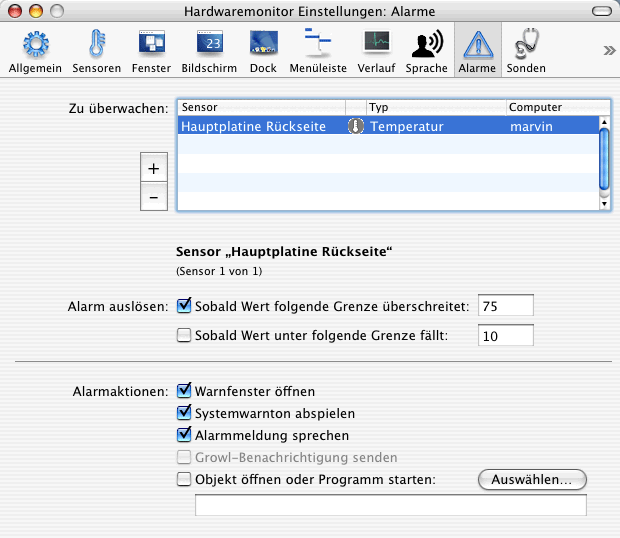

Alarme definieren |
Das Monitorprogramm kann auf Wunsch die Werte von Sensoren überwachen und Sie beim Über- oder Unterschreiten gewisser Schwellwerte mit einer Alarmmeldung benachrichtigen. Die hierzu nötigen Einstellungen befinden sich in der Rubrik Alarme des Einstellungsfensters.

Die Tabelle in der oberen Hälfte des Fensters legt fest, welche Sensoren überhaupt überwacht werden sollen. Sie können Sensoren in die Tabelle einfügen, wie bereits oben beschrieben.
Ist ein Sensor in der Tabelle ausgewählt, können Sie im unteren Bereich des Fensters das Auslösen eines Alarms festlegen. Sie können wahlweise eine obere oder eine untere Grenze für den Messwert angeben, oder auch beides. Temperaturmesswerte werden gemäß der gerade eingestellten Einheit definiert.
Die ursprünglichen Auslösewerte, die nach dem Hinzufügen eines neuen zu überwachenden Sensors angezeigt werden, sind nur vernünftige Standardvorschläge ohne konkrete Bedeutung. Sie stellen keine Empfehlung durch das Programm dar und haben nichts mit den technischen Spezifikationen an der Messposition zu tun. Als Benutzer sind Sie selbst dafür verantwortlich, gute Grenzwerte einzusetzen. Falls die Grenzen kein Betriebsgeheimnis von Apple sind, sind die Werte möglicherweise in der dritten und vierten Spalte des Fensters Sensorübersicht zu finden.
Über- oder unterschreitet ein überwachter Messwert die eingegebenen Grenzen, so wird ein Alarm ausgelöst. Sie können eine oder mehrere der folgenden Aktionen bewirken:
In jedem Fall - sogar wenn Sie überhaupt keine Alarmaktionen definiert haben - zeigt das Programm Messwerte für Sensoren, die sich in einem Alarmzustand befinden, mit umgekehrten Farben an (z.B. weiß auf schwarz statt schwarz auf weiß). Diese Alarmmarkierungen werden im Sensorfenster, auf der Bildschirmanzeige und in der Menüleiste sichtbar. Die mit (*) markierten Optionen werden auch in der "Light"-Menüleistenversion des Programms wirksam.
Der Systemwarnton wird mit dem Punkt Ton > Toneffekte in Systemeinstellungen konfiguriert. Eine gesprochene Alarmmeldung erfolgt nur, wenn die Sprachausgabe auch eingeschaltet ist.
Growl ist eine Technologie eines Drittanbieters, die es erlaubt, "unaufdringliche" Benachrichtigungsmeldungen auf der Benutzeroberfläche von Mac OS X anzuzeigen. Sie unterstützt auch fortgeschrittene Techniken wie Nachrichtenweiterleitung im Netzwerk oder das Senden von Alarmen per E-Mail. Um mehr über Growl zu erfahren, verwenden Sie bitte deren Internetseiten.
Beachten Sie, dass es weder möglich, noch nötig ist, "kritische" Alarme zu definieren, d.h. bei der Überschreitung von Werten, die der Hardware des Computers schaden könnten. Alle Macintosh-Computer, die mit Sensoren ausgestattet sind, überwachen diese bereits selbständig. Der Computer wird von Mac OS X automatisch ausgeschaltet oder in den Ruhezustand gebracht, sobald ein Messwert in einem Wertebereich liegt, der gefährlich ist.
Wenn Sie allerdings Ihre eigenen Richtlinien für den Fall definieren möchten, dass das System sich bei einem Alarmzustand in den Ruhezustand schalten soll, ist dies wie folgt möglich:
tell application "Finder" to
sleepDies kann insbesondere dann nützlich sein, wenn Sie selbst die Hardware angepasst haben, z.B. durch den Einbau einer zusätzlichen Festplatte, die das Wärmeprofil des Systems ändert und die eventuell einen eigenen Sensor enthält.
Wenn Sie die Alarmoption Objekt öffnen oder Programm starten aktivieren, werden die Startdienste von Mac OS X automatisch das Dokument oder Programm aufrufen, das Sie für den Alarmfall eingestellt haben. Falls Sie ein eigenes Skript oder eine Anwendung für diesen Fall entwickeln möchten, ist es möglicherweise erforderlich, dass Ihr Programm erfährt, welcher der konfigurierten Sensoren den Alarm ausgelöst hat. Das Monitorprogramm stellt diese Information über eine Textdatei bereit, die für jeden neuen Alarm (d.h. auch für jeden neuen Aufruf Ihres externen Programms) überschrieben wird.
Die Statusdatei wird an der festen Position
/tmp/HardwareMonitor-CurrentAlert.txt
im Mac OS X-Ordner für temporäre Dateien angelegt. Sie enthält einen internen Bezeichner, der auf den jeweiligen Sensor verweist, der den aktuellen Alarm ausgelöst hat. Falls es sich um einen Fernzugriffssensor handelt, beginnt der Bezeichner mit dem Präfix
remote.seriennummer
wobei seriennummer mit der tatsächlichen Seriennummer des
fernen Computers ersetzt wird.
Um eine vollständige Referenzliste für alle Sensorbezeichner zu erhalten, die in Ihrer gegenwärtigen Konfiguration generiert werden können, wählen Sie den Menüpunkt Ablage > Sensornamen für Alarmskripting sichern aus. Das Monitorprogramm legt eine Textdatei mit einem Bericht an, der alle verbundenen Sensoren in der Form
Bezeichner: angepasster Klartextname dieses Sensors gemäß Ihrer
Einstellungen (Computer)
auflistet.